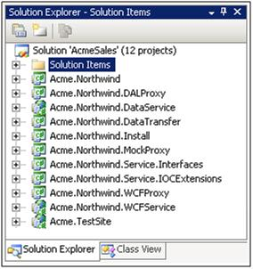
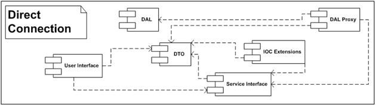
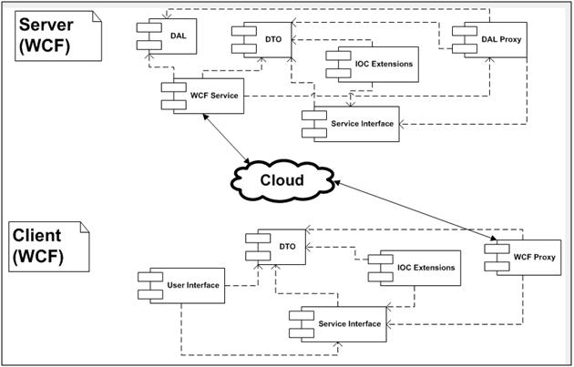
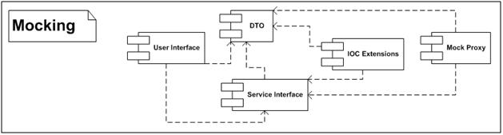

Title: Inversion of Control with nHydrate Author: Chris Davis Email: chrisd@gravitybox.com Member ID: 220760 Language: C# 3.5 Platform: Windows, .NET 3.5 Technology: ASP.NET, C#, Code Generation Level: Intermediate, Advanced Description: Generate code with the nHydrate platform using the Inversion of Control pattern Section Platforms, Frameworks & Libraries SubSection .NET Framework License: Ms-PL
The nHydrate generator is a general purpose code generator that allows you to build quite robust API frameworks. It is based on a model driven methodology. The model defines all aspects of your API. You can control your Data Access Layer (DAL), Data Transfer Layer (DTO), and other aspects of your application framework. A new addition is the de-coupling of the persistence framework from the client API. This implementation follows the common Inversion of Control (IoC) pattern. The full nHydrate installer can be found at http://nhydrate.codeplex.com.
Software now runs in many different domains. By this I mean the same core application or pieces of it may run in a website, a Windows application, a mobile device, etc. All of these domains have their own idiosyncrasies, needs, memory limitations, etc. There is no one master persistence framework that will fill the needs for all spheres of execution. Using the IoC pattern, developers can implement product against a standard API on all domains. This is especially needed for mobile devices since there have more stringent memory constraints, but other domains can quite nicely use this methodology as well. For example, disconnected Windows applications where you do not want direct connections to databases.
The nHydrate generation framework as first released created two main projects: installation and (Data Access Layer) DAL. These projects were generated from a defined model and could be used to build applications from the generated objects with ease. Depending on the size of your model (i.e. database structure), the DAL assembly could get quite large. If your database contains hundreds of tables, as some do, the DAL assembly certainly would not fit on a mobile device. Even using a standard Windows application or website, there is really no need to have all functionality present at all times. The nHydrate framework has new generators that allow you to create additional projects from your model. The DAL is still created as always however there are now projects that can access it remotely and reducing the footprint on clients.
Another advantage of this change is the ability to continue moving products forward without being coupled to a specific persistence technology. Recently there has been lots of press surrounding services in the cloud, specifically Azure® Data Services. Although these offerings may not be right for many of the application in development today, developers would like to write products that can adapt to the technology shift when it is right for them to do so. By using IoC to providing a specific distinction between the client API and its implementation, developers can be assured that the platform can adapt to changes in technology when it is right for the product to do so.
The IoC framework works by defining proxies that communicate with a server using Data Transfer Objects (DTOs). The DTO layer is the cement that holds all other functionality together. The DTO layer has name property objects that hold data. Just the raw data is passed around keeping network traffic to a minimum. Also these objects have no functionality. There is no code that defined on these objects. This allows you to write UI code against the DTO layer with a very small footprint. The interesting part comes when defining the communication. Your client application whether UI, unit tests, etc is written against the DTO layer. It has no reference to any other layer of your framework. The communication is handled by a proxy. Out of the box the nHydrate generator can create three proxies for you: DALProxy, WCFProxy, and MockProxy. The DALProxy proxy is used for a direct connection. The DTO layer is mapped to the DAL and database saves and loads are performed quite quickly. The WCFProxy talks to a generated WCF service. This allows your application to be deployed anywhere on the Internet and talk to a public WCF service. All DTO objects are transparently shuttled to and from the WCF service. Your remote client can interact with the data store as if it were a local connection. The MockProxy allows you to build mocks for unit tests. The beauty of the proxy methodology is that your written application does not need to know any information about the proxies. The same code can execute against any proxy. So your application can run locally or remotely via WCF, or using mocks for unit tests. The power of this framework is that you can write once and run anywhere. Your hand-written application code does not need to be changed for any of the proxies. They are simply the mechanism for interacting with the data store. They are completely swappable. You can extend this framework by writing a proxy for any functionality you wish. Notice that the mocking proxy does not even talk to a data store. It raises events that your unit test writers can use to populate known data scenarios for unit tests. You can even write a proxy for nHibernate or any other generative framework if desired.

The projects needed for a complete IoC implementation are as follows.
The first three are needed on the client and are very light weight. At least one proxy assembly is needed on the client as well and it is similarly light-weight.
The direct connection is the simplest and fastest way to communicate. It relies on the DAL proxy assembly to shuttle information between the DAL and DTO layers. All objects in the diagram below are generated except the UI. This of course is the part of the application that you must write. Notice that the UI (your custom application layer) only references the DTO and Service Interfaces assemblies.

The Service Interfaces assembly knows how to create and save objects based on the configured proxy. The proxy itself does not need to be referenced. When your application calls for a DTO to be created, it asks the Service Interface for a new object. Conversely, when the application needs to save an object (or list of objects) it asks the Service Interfaces assembly to do it. That assembly knows how to handle the requests because of the proxy configuration.
The WCF configuration allows you to have a remote client that communicates through a WCF service with the data store. The client configuration looks much like the direct connection except that the configured proxy is not the WCF proxy assembly. The UI talks to the Service Interfaces assembly as in all cases, however the SI layer is now talking to the WCF proxy. That proxy knows how to communicate with the remote WCF service. This service is also generated and extendable. Once the request is on the server side the it asks exactly like the direct connection because it is a direct connection at this point. The WCF service uses the DAL proxy to communicate with the data store like a locally connected application.

The mocking configuration allows you to hook your application to a mock. This is a simulated data store where all data is loaded or saved with logic. The mocking proxy assembly has events to which you can attach to handle every situation that a data store would. This allows you to simulate a load, save, advanced query, etc and return a canned set of results. This is used to build unit tests. For test driven development (TDD) this is a must. The mocking layer allows disconnected simulation of a data store without having an actual database. Again your application does not need any special code to handle this additional layer. Simply swap the proxy used in the configuration file and you are mocking.

The DAL (data access layer) can still be used to write application directly against a database. This is a very simply way to write an application. However if you have application requirements for TDD (test driven development), mocking, inversion of control, etc you will need to opt for some other appliation arrangement like this the multi-assembly, IoC application configuration. The latter is a bit more complex but provides a way to deploy to different clients with one code base. This real selling point is the write-once, multi-deployment. Using this framwork, you can write the backend one time and use it for multiple clients. Of course you will need to write different clients for mobile, web, or windows, but the backend can be used and unit tested for all of them.
To actually use this configuration we are going to build a web application on the Northwind database. Actually it is a modified Northwind database. The database is included with the sample. It fixes some of the issues with the original database and adds some new features like table inheritance.
The first step is to create a web application. I have chosen to use master pages to give all pages the same look-and-feel. Next we setup the "&web.config"& file. To use this example with the DALProxy we need to setup a connection string. This connection is read by the DALProxy based on the assembly name. Since out assembly has a company name and project name of "&Acme"& and "&Northwind"& respectively the entry looks like this.
<connectionStrings>
<add name="Acme.Northwind" connectionString="server=.;database=AcmeSales;Integrated Security=SSPI;"/>
</connectionStrings>
To identity which proxy assembly we will use, we need to add a "&ProxyAssembly"& entry into the "&web.config"& file. We can swap this entry at any time to use the DAL, WCF, Mock, or a custom implementation proxy.
<appSettings>
<add key="ProxyAssembly" value="Acme.Northwind.DALProxy" />
</appSettings>
Finally we can add an entry at the bottom of the configuration file for WCF. This is only needed if you use the WCFProxy assembly. It is not needed for the DAL or WCF proxies.
<system.serviceModel>
<bindings>
<basicHttpBinding>
<binding name="BasicHttpBinding_IDataService" closeTimeout="00:01:00" openTimeout="00:01:00"
receiveTimeout="00:10:00" sendTimeout="00:01:00" allowCookies="false" bypassProxyOnLocal="false"
hostNameComparisonMode="StrongWildcard" maxBufferSize="65536" maxBufferPoolSize="524288"
maxReceivedMessageSize="65536" messageEncoding="Text" textEncoding="utf-8"
transferMode="Buffered" useDefaultWebProxy="true">
<readerQuotas maxDepth="32" maxStringContentLength="8192" maxArrayLength="16384"
maxBytesPerRead="4096" maxNameTableCharCount="16384" />
<security mode="None">
<transport clientCredentialType="None" proxyCredentialType="None" realm="">
<extendedProtectionPolicy policyEnforcement="Never" />
</transport>
<message clientCredentialType="UserName" algorithmSuite="Default" />
</security>
</binding>
</basicHttpBinding>
</bindings>
<client>
<endpoint address="http://localhost/DataService.svc" binding="basicHttpBinding"
bindingConfiguration="BasicHttpBinding_IDataService" contract="IDataService"
name="AcmeNorthwind_IDataService" />
</client>
</system.serviceModel>
With these entries to the "&web.config"& file, you can now swap the proxy layer to any of the three generated proxies that come out of the box with the nHydrate framework.
The build the site we need to build a list page and an item (edit) page for each type of object. I will build out the "&Region"& table of the database. You can take this and extrapolate the other pages since they use the same pattern but simply display a different object.
First we will build a Region list page with a grid on it. The page is simple. It has an item header, paging control, data grid, and add button. The grid will display the region data in a paginated format. The paging control will display the current page and records per page. The add button is used to add a new item to the collection.
The grid simply displays the region id and name as columns. It also has edit and delete link buttons as far right columns. These allow the user to edit and delete an item directly from the grid. There is also a "&Territories"& link. When clicked, this link loads the Territory list page filtered by the specified region as defined by the one-to-many relationship between Region and Territory. This pattern can be extended to walk any relationship in the model.
The code to populate the region list is very simple. You declare a generic list of region objects and call the extension method to load it.
List<RegionDTO> regionCollection = new List<RegionDTO>();
PagedQueryResults<RegionDTO> results =
regionCollection.RunSelect(this.PagingControl1.PageIndex,
this.PagingControl1.RecordsPerPage,
true, RegionDTO.FieldNameConstants.RegionId.ToString(),
"");
this.PagingControl1.ItemCount = results.TotalRecords;
grdItem.DataSource = regionCollection; grdItem.DataBind();
When using the DAL, you would call a static method and it would return to you the RegionCollection object. However since we are using extension method on the DTO layer, there is no such thing as static methods so we need to create an instance of the object or list we want and call an extension method on it.
The grid will load fine with that little piece of code. All loading is performed in the generated assemblies that define the IoC functionality that were hooked up in "&web.config"& file. The only left to do is handle the grid’s bond event to setup the link buttons. This event is used to setup the link to the edit page, which merely passes the region key on the URL. It also defines a link to the Territory list page with the specified Region key used for loading a specific list. The delete link is a little different in that a confirmation dialog is attached to the link and a command is assigned that is handled in the RowCommand event to actually remove the item from the database.
private void grdItem_RowDataBound(object sender, GridViewRowEventArgs e)
{
if (e.Row.RowType == DataControlRowType.DataRow)
{
RegionDTO region = (RegionDTO)e.Row.DataItem;
HyperLink linkEdit = (HyperLink)e.Row.FindControl("linkEdit");
HyperLink linkTerritories =
(HyperLink)e.Row.FindControl("linkTerritories");
LinkButton linkDelete =
(LinkButton)e.Row.FindControl("linkDelete");
linkEdit.NavigateUrl = "/RegionItem.aspx?id=" + region.RegionId;
linkTerritories.NavigateUrl =
"/TerritoryList.aspx?regionid=" + region.RegionId;
linkDelete.Attributes.Add("onclick",
"return confirm('Do you wish to delete this item?');");
linkDelete.CommandArgument = region.RegionId.ToString();
linkDelete.CommandName = "GoDelete";
}
}
The deletion code is very simple as well. Since the web is stateless it reloads the Region item and calls its Delete extension method. All complex logic and persistence is handled in the IoC Layer and its underlying use of the DAL layer.
if (e.CommandName == "GoDelete")
{
int id = int.Parse((string)e.CommandArgument);
RegionDTO region = new RegionDTO();
region.SelectByPrimaryKey(id);
region.Delete();
}
The new IoC layer functionality of nHydrate really allows to enforce the seperation of concerns doctrine that we strive for in programming. The best part is that the vast majority of your code is generated and model driven. There is really no reason to write the plumbing code that connects layers and databases to UI anymore. The generated framework can be used to start writing UI immediately. It grows with you. As you change your model and define new tables, fields, attributes, relationships, etc, simply regenerate and the entire framework is reworked for you. It is all compile-time checked as well. If you remove a field or other object, all references in your hand-written application give you a compile-time error. There is no reason to search for all broken references; the compiler will do it for you.
Model driven engineering (MDE), test-driven development (TDD), inversion of control (IoC), mocking, and seperation of concerns (SoC) are some of the reasons that the nHydrate framework allows you to build higher quality software, faster.